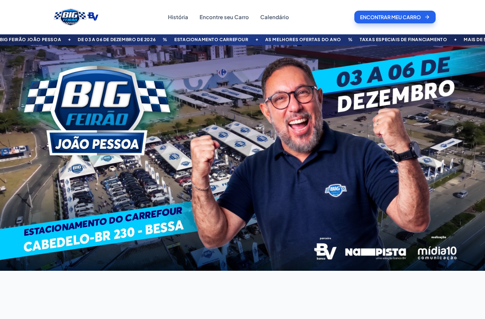
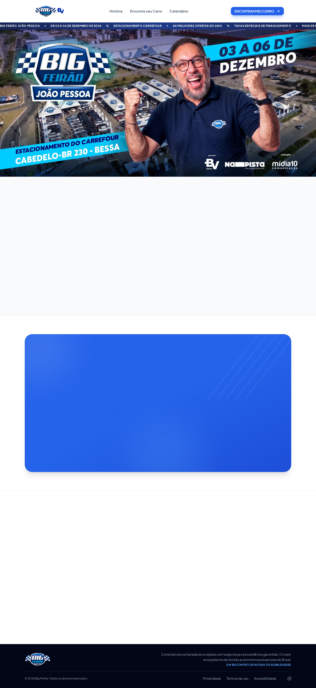

Sistema de Investigação de Marca e Identidade Online
https://bigfeiraodoautomovel.com.br/
Prioridade: HIGH · Cenário: C_POSSIBLE_OFFICIAL_CHANNEL · Revisão humana: PENDING
O estabelecimento opera no segmento automotivo promovendo feirão de veículos com intermediação de financiamento. Embora cite parceria com o Banco BV, comete infração aos deveres de transparência ao acoplar diretamente o logotipo do banco à sua própria marca no topo do site ('Big Feirão & BV Financeira') e no banner hero, omitindo totalmente a razão social, CNPJ e a declaração obrigatória de correspondente bancário (Resolução CMN nº 4.935/2021, art. 14, II e III). Configura indício forte de canal associado/oficial presumido de forma irregular. [Revisor: CONFIRM] Confirma-se a classificação STRONG_INDICATION com prioridade HIGH. Trata-se de feirão automotivo de terceiros que acopla o logotipo do Banco BV diretamente à sua própria marca no cabeçalho do site (E-IMG-1, E-SHOT-VIEWPORT) e no banner promocional, sem apresentar CNPJ, razão social da entidade promotora, indicação expressa da condição de correspondente bancário nem dados da ouvidoria, em desconformidade com a Resolução CMN nº 4.935/2021 (art. 14).


| Ref | Tipo | Local | Conteúdo |
|---|---|---|---|
| E-URL | domain | url | URL final: https://bigfeiraodoautomovel.com.br/ (domínio: bigfeiraodoautomovel.com.br) |
| E-DISC-001 | text | search_index | Índice de busca (serper): BIG Feirão do Automóvel em João Pessoa — Big Feirão & BV Financeira HistóriaEncontre seu CarroCalendário · ENCONTRAR ... - Amapá, AM - Amazonas, BA - Bahia, CE - Ceará, DF - Distrito Federal, ES ... |
| E-SHOT-VIEWPORT | screenshot | viewport | evidence/Cc65d7f90fd/attempt-1/viewport.png (sha256 77af31bbabc9dea2…) |
| E-SHOT-FULL | screenshot | page | evidence/Cc65d7f90fd/attempt-1/fullpage.png (sha256 08c16ef27cbc3a8f…) |
| E-TITLE | title | head | BIG Feirão do Automóvel em João Pessoa |
| E-META-1 | meta | head | description: Encontre carros e motos seminovos com condições especiais no BIG Feirão do Automóvel. Cadastre-se agora e receba ofertas e taxas exclusivas! |
| E-META-2 | meta | head | og:title: BIG Feirão do Automóvel | Carros e Motos Seminovos |
| E-META-3 | meta | head | og:description: Encontre carros e motos seminovos com condições especiais no BIG Feirão do Automóvel. Cadastre-se agora e receba ofertas e taxas exclusivas! |
| E-HEAD-1 | heading | page | BIG Feirão do Automóvel |
| E-HEAD-2 | heading | page | Mais de duas décadas realizando sonhos. |
| E-HEAD-3 | heading | page | O seu próximo veículo está no BIG com condições imbatíveis. |
| E-HEAD-4 | heading | page | Encontrar seu próximo carro no BIG |
| E-HEAD-5 | heading | page | BIG Feirão |
| E-HDR | text | header | História Encontre seu Carro Calendário ENCONTRAR MEU CARRO |
| E-FOLD | text | viewport (acima da dobra) | História Encontre seu Carro Calendário ENCONTRAR MEU CARRO BIG FEIRÃO JOÃO PESSOA ✦ DE 03 A 06 DE DEZEMBRO DE 2026 % ESTACIONAMENTO CARREFOUR ✦ AS MELHORES OFERTAS DO ANO % TAXAS ESPECIAIS DE FINANCIAMENTO ✦ MAIS DE 500 CARROS REUNIDOS % ENTRADA FACILITADA ✦ NÃO PERCA! % APROVAÇÃO RÁPIDA DE CRÉDITO ✦ BIG FEIRÃO JOÃO PESSOA ✦ DE 03 A 06 DE DEZEMBRO DE 2026 % ESTACIONAMENTO CARREFOUR ✦ AS MELHORES OFERTAS DO ANO % TAXAS ESPECIAIS DE FINANCIAMENTO ✦ MAIS DE 500 CARROS REUNIDOS % ENTRADA FACILITADA ✦ NÃO PERCA! % APROVAÇÃO RÁPIDA DE CRÉDITO ✦ BIG FEIRÃO JOÃO PESSOA ✦ DE 03 A 06 DE DEZEMBRO DE 2026 % ESTACIONAMENTO CARREFOUR ✦ AS MELHORES OFERTAS DO ANO % TAXAS ESPECIAIS DE FINANCIAMENTO ✦ MAIS DE 500 CARROS REUNIDOS % ENTRADA FACILITADA ✦ NÃO PERCA! % APROVAÇÃO RÁPIDA DE CRÉDITO ✦ BIG FEIRÃO JOÃO PESSOA ✦ DE 03 A 06 DE DEZEMBRO DE 2026 % ESTACIONAMENTO CARREFOUR ✦ AS MELHORES OFERTAS DO ANO % TAXAS ESPECIAIS DE FINANCIAMENTO ✦ MAIS DE 500 CARROS REUNIDOS % ENTRADA FACILITADA ✦ NÃO PERCA! % APROVAÇÃO RÁPIDA DE CRÉDITO ✦ BIG Feirão do Automóvel |
| E-FTR | text | footer | Conectamos compradores e lojistas com segurança e procedência garantida. O maior ecossistema de feirões automotivos presenciais do Brasil. UM ENCONTRO DE NOVAS POSSIBILIDADES © 2026 Big Feirão. Todos os direitos reservados. Privacidade Termos de uso Acessibilidade |
| E-NAV | nav | header | <https://bigfeiraodoautomovel.com.br/> | História <https://bigfeiraodoautomovel.com.br/#historia> | Encontre seu Carro <https://bigfeiraodoautomovel.com.br/#lojistas> | Calendário <https://bigfeiraodoautomovel.com.br/#calendario> | ENCONTRAR MEU CARRO <https://bigfeiraodoautomovel.com.br/#lojistas> |
| E-CTA-1 | cta | page | Cadastra-se aqui! |
| E-CONTACT-1 | contact | footer | Instagram @bigfeiraodoautomovel <https://www.instagram.com/bigfeiraodoautomovel/> |
| E-IMG-1 | image | header (acima da dobra) | imagem alt='Big Feirão & BV Financeira' src=https://wlklxrtmvrrjnulewhjf.supabase.co/storage/v1/object/public/banner/LOGO%20BIG%20E%20BV.png (149x84, acima da dobra) |
| E-IMG-2 | image | footer | imagem alt='Big Feirão' src=https://bigfeiraodoautomovel.com.br/logo.png (112x56, abaixo da dobra) |
| E-TXT-001 | text | page | Criado por Vitor de Lima em 2001, o BIG FEIRÃO se posiciona como uma grande plataforma de negócios, gerando oportunidades e realização de sonhos. Sua proposta é reunir uma grande variedade de carros, oferecendo condições comerciais e atrativas, facilitando o financiamento e criando um ambiente de vendas com grande movimentação de público em parceria com o Banco BV. |
| E-TXT-002 | text | page | |
| E-TXT-003 | text | page | CALENDÁRIO OFICIAL |
| Dimensão | Sinal | Achado | Refs |
|---|---|---|---|
| VISUAL_IDENTITY | CONFUSION | Fusão visual da marca do evento com o logotipo do Banco BV no cabeçalho e inclusão dos selos Banco BV e NaPista no banner principal. | E-IMG-1 E-SHOT-VIEWPORT |
| DECLARED_COMMERCIAL_IDENTITY | CONFUSION | Nenhum CNPJ ou razão social identificável no rodapé ou na página do feirão. | E-FTR E-SHOT-FULL |
| CORRESPONDENT_TRANSPARENCY | CONFUSION | Ausência total de aviso regulatório de correspondente bancário (Res. CMN 4.935/2021) e de canais de ouvidoria. | E-FTR E-TXT-001 |
| INSTITUTIONAL_LANGUAGE | NEUTRAL | Texto descreve o evento como uma realização em parceria com o Banco BV para oferta de crédito e taxas de financiamento. | E-TXT-001 E-FOLD |
| LOGO_USAGE | CONFUSION | Uso destacado da marca oficial do Banco BV em co-branding não regulamentado no topo da página e na arte publicitária. | E-IMG-1 E-SHOT-VIEWPORT |
| SERVICE_JOURNEY | NEUTRAL | Direcionamento para feirão presencial de veículos com captação de cadastros e ofertas de financiamento. | E-META-1 E-CTA-1 |
| CONTACT_CHANNELS | NEUTRAL | Canais de contato limitados a perfil de Instagram e botão de WhatsApp. | E-CONTACT-1 E-TXT-002 |
| CONSUMER_CONFUSION | CONFUSION | A indexação e o logotipo conjunto 'Big Feirão & BV Financeira' induzem o consumidor a crer que o evento é promovido conjuntamente ou de titularidade direta do banco. | E-DISC-001 E-IMG-1 |
O estabelecimento opera no segmento automotivo promovendo feirão de veículos com intermediação de financiamento. Embora cite parceria com o Banco BV, comete infração aos deveres de transparência ao acoplar diretamente o logotipo do banco à sua própria marca no topo do site ('Big Feirão & BV Financeira') e no banner hero, omitindo totalmente a razão social, CNPJ e a declaração obrigatória de correspondente bancário (Resolução CMN nº 4.935/2021, art. 14, II e III). Configura indício forte de canal associado/oficial presumido de forma irregular.
Nenhum CNPJ ou razão social identificáveis no conteúdo coletado.
| Tipo | Valor | Ref | Contexto |
|---|---|---|---|
| domain | bigfeiraodoautomovel.com.br | E-URL | |
| social_profile | https://www.instagram.com/bigfeiraodoautomovel/ | E-CONTACT-1 | |
| partnership_declaration | em parceria com | E-TXT-001 | Sua proposta é reunir uma grande variedade de carros, oferecendo condições comerciais e atrativas, facilitando o financiamento e criando um ambiente de vendas com grande movimentação de público em par |
Mapeamento indicativo para apoio à auditoria. Não constitui conclusão regulatória; a decisão definitiva pertence à auditoria.
Fonte: NORMATIVE
Art. 14. O contrato de correspondente deve estabelecer: [...] II - vedação à utilização, pelo contratado, de logomarca ou de outros atributos que sejam similares aos adotados pela instituição contratante em suas agências, postos de atendimento, sítio eletrônico na internet, aplicativo ou outras plataformas de comunicação em rede;
Hipótese: Uso de logomarca, uso excessivo/desproporcional ou de atributos similares aos adotados pela contratante em seus canais. A norma disciplina correspondentes contratados; o responsável não foi identificado como correspondente.
Evidência observada: E-DISC-001 E-IMG-1 E-SHOT-VIEWPORT
Informação faltante:
Fonte: NORMATIVE
Art. 14. O contrato de correspondente deve estabelecer: [...] III - divulgação ao público, pelo contratado, de sua condição de prestador de serviços à instituição contratante, identificada pelo nome com que é conhecida no mercado, com descrição dos produtos e serviços oferecidos e canais de contato da instituição contratante, inclusive de sua ouvidoria, em local visível, em destaque e em formato legível, por meio de: a) sítio eletrônico do correspondente na internet, acessível na página inicial; b) aplicativo e outras plataformas de comunicação em rede do correspondente; [...]
Hipótese: Divulgação ao público da condição de prestador de serviços/parceria ausente, insuficiente, ambígua ou sem destaque. A norma disciplina correspondentes contratados; o responsável não foi identificado como correspondente.
Evidência observada: E-DISC-001 E-FTR E-IMG-1 E-SHOT-FULL E-TXT-001
Informação faltante:
Fonte: NORMATIVE
Art. 3º O correspondente atua por conta e sob as diretrizes da instituição contratante, que assume inteira responsabilidade pelo atendimento prestado aos clientes e usuários por meio do contratado.
Evidência observada: —
Se o responsável não for correspondente contratado, os indícios podem caracterizar uso indevido de marca ou fraude, fora do escopo da Res. 4.935: avaliar encaminhamento às áreas jurídica/segurança.
Limitações: requisitos contratuais/internos não fornecidos: mapeamento limitado ao texto normativo
Decisão: CONFIRM → STRONG_INDICATION / HIGH
Confirma-se a classificação STRONG_INDICATION com prioridade HIGH. Trata-se de feirão automotivo de terceiros que acopla o logotipo do Banco BV diretamente à sua própria marca no cabeçalho do site (E-IMG-1, E-SHOT-VIEWPORT) e no banner promocional, sem apresentar CNPJ, razão social da entidade promotora, indicação expressa da condição de correspondente bancário nem dados da ouvidoria, em desconformidade com a Resolução CMN nº 4.935/2021 (art. 14).
| Tema | Severidade | Questionamento | Refs |
|---|---|---|---|
| domain_attribution | MEDIUM | Responsável pela página não identificado; a conclusão sobre a marca não pode ser atribuída a um estabelecimento específico. | E-URL |
| Fonte | Consulta / hipótese | URL original | Título / trecho |
|---|---|---|---|
| serper | "bv financeira" financiamento veículos "Amapá" -site:bv.com.br -site:bancobv.com.br -site:bvfinanceira.com.br -site:bvinvestimentos.com.br -site:napista.com.br -site:bvopen.com.br -site:meufinanciamentosolar.com.br -site:votorantim.com.br -site:vam.com.br -site:reclameaqui.com.br -site:jusbrasil.com.br -site:jus.br H13-legacy-focus:regiao-Norte | https://bigfeiraodoautomovel.com.br/ | BIG Feirão do Automóvel em João Pessoa Big Feirão & BV Financeira HistóriaEncontre seu CarroCalendário · ENCONTRAR ... - Amapá, AM - Amazonas, BA - Bahia, CE - Ceará, DF - Distrito Federal, ES ... |
Original: https://bigfeiraodoautomovel.com.br/
Final: https://bigfeiraodoautomovel.com.br/
| Artefato | Caminho | SHA-256 | Bytes |
|---|---|---|---|
| screenshot_viewport | evidence/Cc65d7f90fd/attempt-1/viewport.png | 77af31bbabc9dea23a64df658ddc98b6022c18919c1499569551a06e447747a3 | 1365741 |
| screenshot_full | evidence/Cc65d7f90fd/attempt-1/fullpage.png | 08c16ef27cbc3a8f0401565a9b054e5ea4b495ccc2e8cc975da83e45dfbae4f3 | 1616980 |
| html | evidence/Cc65d7f90fd/attempt-1/page.html.txt | be3e6bd348e3d37014f5a1ae6242f0858743e792eedbd2b92fb6a7cf99ba6d68 | 39442 |
| text | evidence/Cc65d7f90fd/attempt-1/text.txt | eb54f1a6fb5fa31059117eb489f37a1ea4855ed8a4c2948cd5aa60bfd69816de | 3333 |
| page_data | evidence/Cc65d7f90fd/attempt-1/page.json | 0816bd2d74f1205516003e3a56a692ac5a63bbffda517a691f32e1d5e5dbef77 | 10359 |
| Quando | De | Para | Nota |
|---|---|---|---|
| 2026-11-25T20:49:00+00:00 | DISCOVERED | QUEUED | prioritised (score 2.5) |
| 2026-11-25T20:50:16+00:00 | QUEUED | COLLECTING | |
| 2026-11-25T20:50:25+00:00 | COLLECTING | COLLECTED | |
| 2026-11-25T20:50:25+00:00 | COLLECTED | ANALYZING | |
| 2026-11-25T20:51:40+00:00 | ANALYZING | REVIEWING | |
| 2026-11-25T20:54:44+00:00 | REVIEWING | COMPLETED |